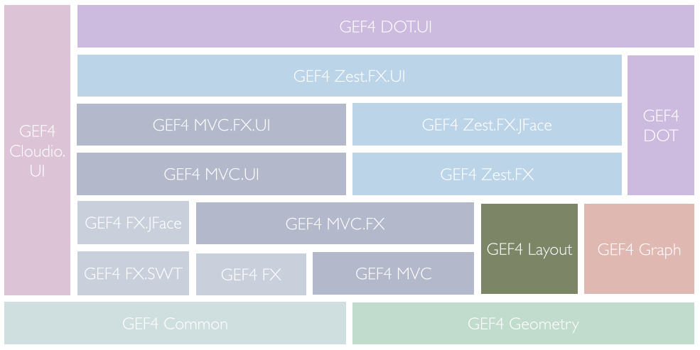
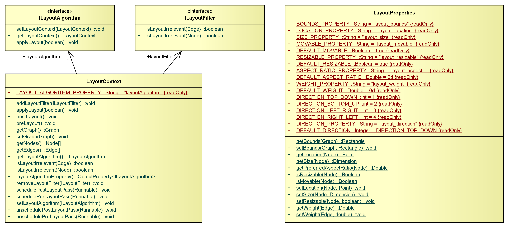
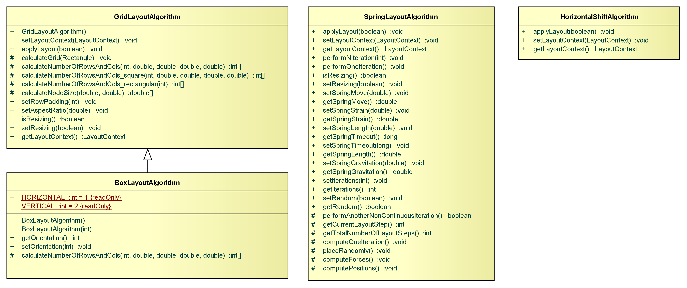
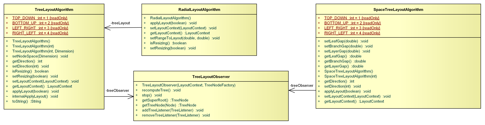
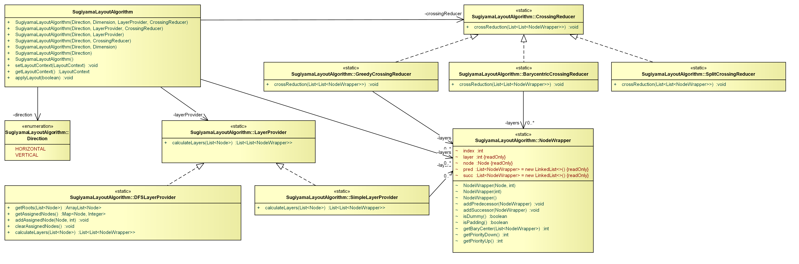
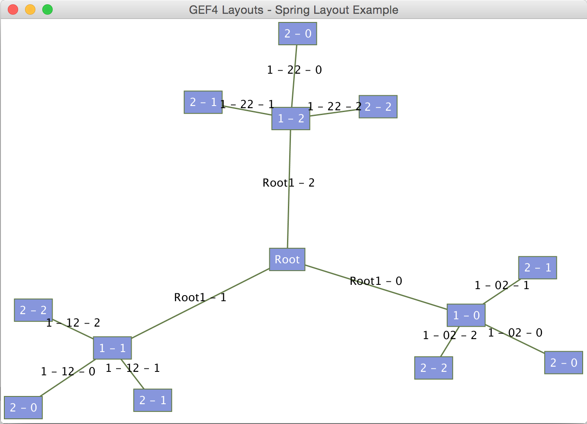
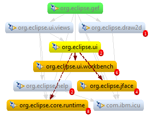
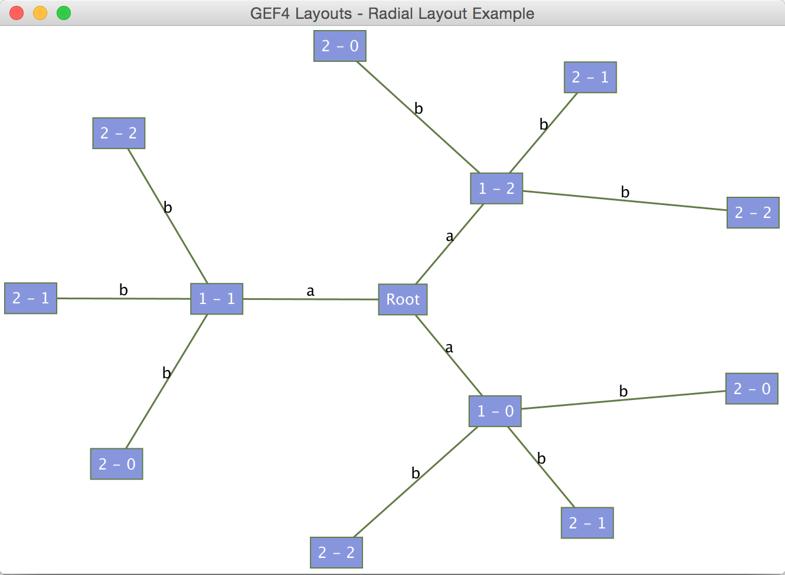
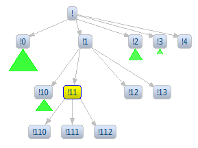
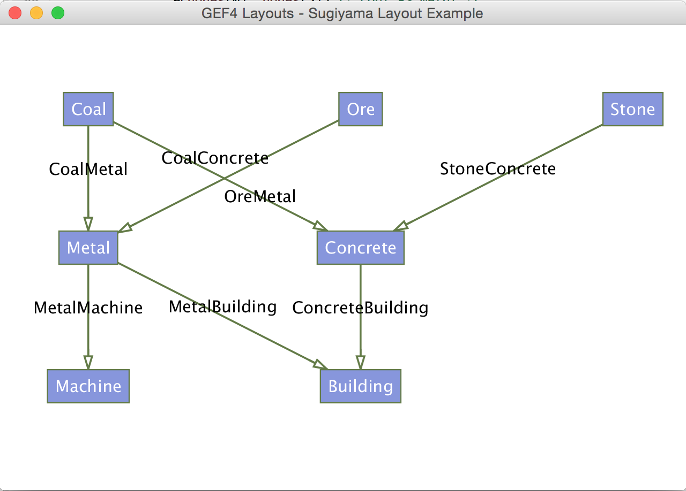

Note to non-wiki readers: This documentation is generated from the Eclipse wiki - if you have corrections or additions it would be awesome if you added them in the original wiki page .
The GEF4 Layout component provides basic abstractions for layout algorithms and related listeners, as well as a set of layout algorithm implementations. It is internally decomposed into the single Layout module. There are also a couple of undeployed Layout Examples.

The Layout module of GEF4 Layout provides abstractions and related to auto-layout ( {Root}) as well as concrete layout algorithm implementations( Algorithms).
The {Root} package provides support for automatic layout. Automatic layout is performed by ILayoutAlgorithm implementations. Each ILayoutAlgorithm is bound to a LayoutContext, which provides all necessary information about what is to be layouted and how. The what is described in terms of a GEF4 Graph input model. An ILayoutFilter can be used to sort out those graph elements that are (currently) not of relevance for layouting. Details about the what can be inferred from properties ( LayoutProperties) that can be attributed to all layout abstractions. These can also be used to influence how the layout algorithm performs the layout.

ILayoutAlgorithm is the base abstraction for all layout algorithm implementations. An ILayoutAlgorithm needs a reference to a
LayoutContext, which provides information about what is to be layouted in terms of a
Graph, which will have to be attributed in addition with respective properties that are required by the algorithm.
A LayoutContext provides the necessary context information needed by an
ILayoutAlgorithm. The LayoutContext is the central entry point for clients to trigger layout. It provides the input
Graph model that indicates
what is to be layouted, and references the layout algorithm that is to be applied. The LayoutContext further supports scheduling
pre-layout-passes and
post-layout-passes which are executed before or after applying a layout, respectively. These can, for example, be used to update the information which the LayoutContext provides, prior to applying a layout, or transfering information back from the LayoutContext to the underlying data model after applying a layout.
When applying a layout, the configured algorithm will evaluate all
Graph model returned by the LayoutContext when computing the layout. If not all model elements of the input model are relevant for layout, an
ILayoutFilter can be applied to filter input model elements.
An ILayoutFilter is used to filter out
GEF4 Graph input elements, so that they are not returned by the context, and therefore, are not layed out. For example, this is how
GEF4 Zest filters out hidden nodes and edges:
// add layout filter for hidden/layout irrelevant elements
final HidingModel hidingModel = getHost().getRoot().getViewer().getAdapter(HidingModel.class);
if (hidingModel != null) {
getLayoutContext().addLayoutFilter(new ILayoutFilter() {
@Override
public boolean isLayoutIrrelevant(Edge edge) {
return Boolean.TRUE.equals(ZestProperties.getLayoutIrrelevant(edge))
|| isLayoutIrrelevant(edge.getSource()) || isLayoutIrrelevant(edge.getTarget());
}
@Override
public boolean isLayoutIrrelevant(org.eclipse.gef4.graph.Node node) {
return Boolean.TRUE.equals(ZestProperties.getLayoutIrrelevant(node)) || hidingModel.isHidden(node);
}
});
}
The LayoutProperties class defines the layout properties for
Graph,
Node, and
Edge elements processed by the
ILayoutAlgorithm. The algorithms access these properties to read/write node locations and sizes, among other things.
The following properties are supported for graphs (g), nodes (n), and edges (e):
BOUNDS_PROPERTY,
org.eclipse.gef4.geometry.planar.Rectangle (g): Specifies the rectangular area in which nodes can be placed by layout algorithms.
LOCATION_PROPERTY,
org.eclipse.gef4.geometry.planar.Point (n): Specifies the node's location.
SIZE_PROPERTY,
org.eclipse.gef4.geometry.planar.Dimension (n): Specifies the node's size (i.e. width and height).
MOVABLE_PROPERTY,
java.lang.Boolean (n): Specifies if the location of the node can be changed by layout algorithms.
RESIZABLE_PROPERTY,
java.lang.Boolean (n): Specifies if the size of the node can be changed by layout algorithms.
ASPECT_RATIO_PROPERTY,
java.lang.Double (n): Specifies the node's preferred aspect ratio, i.e. the quotient of its width and height.
WEIGHT_PROPERTY,
java.lang.Double (e): Specifies the edge's weight, which can be accessed and interpreted by layout algorithms.
The following code snippet demonstrates how to use LayoutProperties:
public static void main(String[] args) {
// create graph
Graph graph = new Graph();
Node n1 = new Node();
n1.setGraph(graph);
Node n2 = new Node();
n2.setGraph(graph);
graph.getNodes().addAll(Arrays.asList(new Node[] { n1, n2 }));
Edge e = new Edge(n1, n2);
e.setGraph(graph);
// create layout context
LayoutContext context = new LayoutContext();
// provide the input model
context.setGraph(graph);
// set layout bounds
LayoutProperties.setBounds(graph, new Rectangle(0, 0, 100, 100));
// set node layout sizes
LayoutProperties.setSize(n1, 25, 25);
LayoutProperties.setSize(n2, 25, 25);
// set layout algorithm
context.setLayoutAlgorithm(new SpringLayoutAlgorithm());
// apply layout
context.applyLayout(true);
// read locations after layout
System.out.println("n1 at " + LayoutProperties.getLocation(n1));
System.out.println("n2 at " + LayoutProperties.getLocation(n2));
}
The Algorithms package provides different implementations of concrete layout algorithms. There are a couple of simple algorithms that arrange nodes in a grid ( GridLayoutAlgorithm), a single column or row ( BoxLayoutAlgorithm), or which simply prevent overlapping of nodes ( HorizontalShiftLayoutAlgorithm).

There are also tree-based algorithms that arrange nodes in a classical ( TreeLayoutAlgorithm) or radial tree ( RadialLayoutAlgorithm), as well as a dedicated algorithm that optimizes folding and unfolding of sub-trees based on the available size ( SpaceTreeLayoutAlgorithm).

Last, there is the implementation ( SugiyamaLayoutAlgorithm) of a rank-based algorithm as published by Kozo Sugiyama, Shojiro Tagawa, and Mitsuhiko Toda in their paper about Methods for Visual Understanding of Hierarchical System Structures.

A GridLayoutAlgorithm is a simple layout algorithm that places all elements into a grid, where the number of columns and rows is computed by the algorithm.
A BoxLayoutAlgorithm is a simple layout algorithm that places all elements in a single column or row, depending on a specifiable orientation.

A HorizontalShiftLayoutAlgorithm is a simple layout algorithm that shifts overlapping nodes to the right.
The TreeLayoutAlgorithm is a simple algorithm to arrange nodes in a layered, tree-like layout.

The RadialLayoutAlgorithm lays out a tree in a circular fashion, where the roots are located in the center.

The SpaceTreeLayoutAlgorithm keeps track of node positions all the time, always trying to form a nice tree structure. This means movement of nodes with the mouse is somehow restricted (you can move a node within its current layer, but only if it doesn't cause nodes to be pushed out of the graph area.

The SugiyamaLayoutAlgorithm lays out nodes in ranks. Its an implementation of the algorithm published by Kozo Sugiyama, Shojiro Tagawa, and Mitsuhiko Today in their paper about
Methods for Visual Understanding of Hierarchical System Structures.

The layout API that was part of Zest 1.x has been migrated into the GEF4 Layout component, where it has been reworked (see #372365, #469472, #484421, and #491097 for details).
To define custom layouts, instead of extending AbstractLayoutAlgorithm implement ILayoutAlgorithm (see example below and full code in CustomLayoutExample.java in the examples bundle).
ILayoutAlgorithm layoutAlgorithm = new ILayoutAlgorithm() {
private LayoutContext context;
@Override
public void applyLayout(boolean clean) {
Node[] entitiesToLayout = context.getNodes();
int totalSteps = entitiesToLayout.length;
double distance = LayoutProperties.getBounds(context.getGraph()).getWidth() / totalSteps;
int xLocation = 0;
for (int currentStep = 0; currentStep < entitiesToLayout.length; currentStep++) {
Node layoutEntity = entitiesToLayout[currentStep];
LayoutProperties.setLocation(layoutEntity, new Point(xLocation,0));
xLocation += distance;
}
}
@Override
public LayoutContext getLayoutContext() {
return context;
}
@Override
public void setLayoutContext(LayoutContext context) {
this.context = context;
}
};